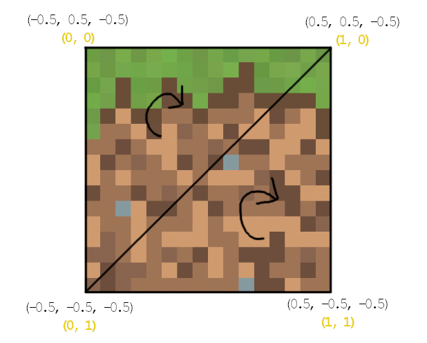

Texture sampling
Engine của chúng ta đã bắt đầu nhìn thực tế rồi, nó sẽ càng thực tế hơn nữa nếu ta bắt đầu thêm cả texture 😳 Nếu bạn không biết thì texture đơn giản chỉ là "hình nằm trên model", là thứ làm cho model của chúng ta không còn 1 màu nữa.Trong ngành CN game, mỗi một texture đều có hệ tọa độ gọi là UV, đơn giản chỉ là hệ tọa độ mà bằng (0; 0) ở góc trái trên và bằng (1; 1) ở góc phải dưới, dù cho hình có là hình chữ nhật hay hình vuông. Cái quan trọng là cách mà ta "áp" được hình đó vào trong model như thế nào, đó gọi là UV mapping, để làm được điều đó, người ta sẽ định nghĩa thêm giá trị UV cho từng đỉnh trong model, để cho hình có thể "áp" được theo ý mình muốn vào trong. Ví dụ hình dưới mình vẽ một hình vuông trong engine có 4 đỉnh có 4 UV như hình, sẽ map ra vùng tương ứng trong texture.


Thế là ngoài màu và worldVertices, ta còn phải lưu thêm UV cho 3 đỉnh tam giác trong class Triangle 😳 Trước đó ta cần tạo một class đại diện cho UV, đi ngược lại những gì mình nói ở blog 9, mình sẽ tạo một class Vector2 😅 Chỉ dùng nó cho UV mà không dùng nó cho pixel (vì quá nhiều), bên trong là u và v thay vì là x và y, thêm luôn hàm nội suy lerp vì ta cũng phải nội suy nó khi tạo các tam giác mới, y hệt như worldVertices.
class Vector2 {
constructor(u = 0, v = 0) {
this.u = u;
this.v = v;
}
clone() {
return new Vector2(this.u, this.v);
}
static lerp(vec1, vec2, t) {
return new Vector2(
vec1.u + (vec2.u - vec1.u) * t,
vec1.v + (vec2.v - vec1.v) * t);
}
}